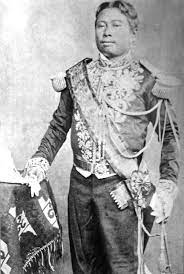

Norodom (Khmer: នរោត្តម, Nôroŭttâm [nɔˈroːɗɑm]; born Ang Voddey (Khmer: អង្គវតី, Ângk Vôtei [ʔɑŋ ʋɔˈtəj]); 3 February 1834 – 24 April 1904) was King of Cambodia from 19 October 1860 to his death on 24 April 1904. He was the eldest son of King Ang Duong and was a half-brother of Prince Si Votha and King Sisowath. He was elected to the throne in 1860 but would not be crowned until 1864 due to the fact that Siam held the royal regalia (the royal crown and other artefacts). In 1863, he signed a treaty with France by which he gave France control over Cambodia's foreign relations in exchange for personal protection against his enemies. The treaty saved Cambodian independence, but French control over Cambodia's internal affairs strengthened continually until the end of his reign (full independence was not restored until 1953). His reign of 43 years and 188 days is the longest in Cambodian history in terms of verifiable exact date. Upon his death, he was succeeded by his half-brother, Sisowath.
He is the progenitor of the House of Norodom which has been the ruling royal house of Cambodia since 1941.
Norodom's royal name was Norodom Prohmbarirak (Khmer: នរោត្ដម ព្រហ្មបរិរក្ស), previously, Ang Reacheavoddey (Khmer: អង្គរាជាវតី). He is referred to as Ang Voddey in some Western accounts. His posthumous title is Preah Karuna Preah Sovannakot (Khmer: ព្រះករុណាព្រះសុវណ្ណកោដ្ឋ).
Early life and accession
Norodom was the eldest son of Ang Duong. In 1850, he and his half-brother Prince Sisowath were sent to study in Bangkok by their father Ang Duong , where they grew up in close proximity to members of the Siamese royal family. In 1857, Norodom (Prince Phrom Borirak) served in the Royal Siamese Army as a military adviser, for which later he was awarded the Order of the White Elephant.In 1861, Norodom's half-brother Si Votha rebelled and Norodom abandoned the capital of Oudong and fled to safety in Bangkok. The Siamese court returned him to Phnom Penh early in 1862, and in 1863 he signed a treaty with the French placing himself under French protection. The Siamese eventually returned the royal regalia and his coronation followed in 1864.French protectorate
On 17 June 1884, French authorities forced King Norodom to sign a treaty which consolidated their position in Cambodia by forcing him to give up control of public revenue, customs taxes and public works. Norodom resisted but with French gunboats anchored outside the Royal Palace he had no choice but to sign. The French actions caused widespread anger throughout the country. In 1885 Prince Si Votha , Norodom's half brother, led a revolt against the French rule. The French suspected that Norodom was secretly supporting Si Votha's actions and blamed him for inciting the revolts. The revolt ended when the Cambodians were assured by King Norodom that the French had offered concessions to him. After the restoration of the 1885-1886 revolt, Norodom was in a position of temporary strength. To prevent another revolt, the French were less inclined to force the king to the wall once more.
Throughout Norodom's reign, several administrative and judicial reforms were improved in the kingdom. The reduction of provinces was imposed to help reduce administrative costs. He also followed King Chulalongkorn and abolished commercial monopolies, slavery, and civil lists for the royal family. During his reign, certain agricultural products such as betel, pepper and sugar costs were reduced.
In 1872, Norodom went on an official visit to Hong Kong, Manila and Singapore. In Manila, the King was greatly impressed by the music skills of the Filipinos and decided to take some musicians back to Cambodia to teach modern music. Norodom's generosity began drawing artists from many nationalities to Cambodia and they were always given a warm welcome at royal palace and court. Most of them had a deep interest in the Royal Ballet and thus were given every opportunity to learn Khmer music and dance.
Under King Norodom, the beginnings of the Royal Khmer Navy were established for territorial protection.